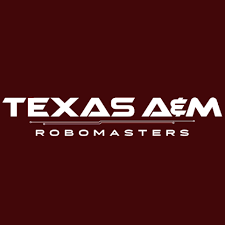

Vision | TAMU Robomaster Robotics
| Placed 3rd in 2021 North American Robomasters competition |
Was a part of a team consisting of 15 dedicated developers trying to develop a robot in under a $3000 annual
budget.Through Python and experimental datasets, the robot achieved a 96% accuracy when it comes to robot detection.
Generated a synchronous pipeline for subsystems to communicate. Utilized OpenCV and vector algebra for object
detection with noise.

Summer Engagement Program
Selected by Paycom to join them in sessions to learn and work with them to gain an exponential understanding
about a technical company's workforce. Got to utilize and observe Git, PHP, React, and SQL.
IHI E&C Engineering Tool Developer
Developed software for structural engineers who analyze and design offshore oil & gas platforms and onshore LNG
terminals. Develop Excel based in house software using VBA. By using given design data we can perform analysis and designs
increase productivity from 60 - 95 percent.
Kumon: After School Math & Reading Programs | Leadership
Created a system to track student progress and identify areas of improvement, resulting in an average increase of
11% in test scores.Developed lesson plans based on each student's individual needs; this increased engagement and boosted
confidence levels. Regularly communicated with parents about their child's progress.
The transfer of electrocardiogram (ECG) data through a client-server relationship
Designed a client and server utilizing C++. The server hosts ECG data points of patients. The client side can obtain any data point
from the server and obtain a file of any size. Used multithreading to increase operations by 33%. Also utilized TCP protocol
and sys/socket so the server and client can reside on different machines

Aggie Shell
Utilizing C++ I implemented my very own linux shell. This linux shell in my OS lets a user navigate through the file system
and performs a wide variety of tasks using a series of simple commands.This includes command pipelining, cd commands,
background processes, etc.